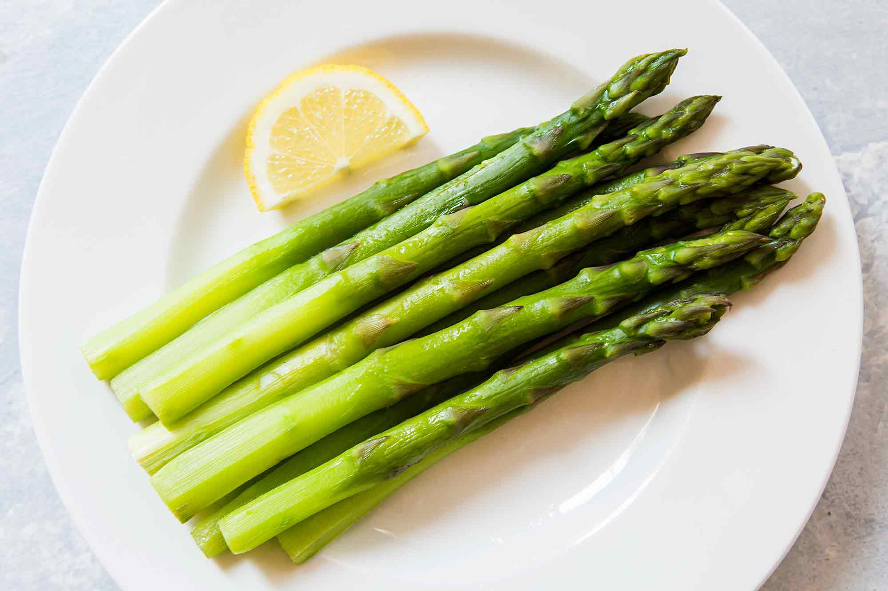

Asparagus

Description
Salty and savory, the roasting method kills the natural bitterness of asparagus. Try it next to grilled fish or lamb.
Ingredients
- Asparagus spears
- 3 tbsp olive oil
- 1 tbsp grated parmesan cheese
- 1 clove garlic
- 1 tsp sea salt
- 1 tsp ground black pepper
Steps
- Preheat an oven to 425 degrees F (220 degrees C).
- Place the asparagus into a mixing bowl, and drizzle with the olive oil. Toss to coat the spears, then sprinkle with Parmesan cheese, garlic, salt, and pepper. Arrange the asparagus onto a baking sheet in a single layer.
- Bake in the preheated oven until just tender, 12 to 15 minutes depending on thickness. Sprinkle with lemon juice just before serving.